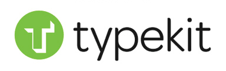
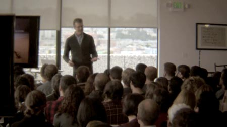

Firstly, a big congratulations to the TypeKit team joining the Adobe family. I’m about 6 months late, but that announcement is what kicked off this thought process and got me to writing this article.
I was in San Francisco back in November 02011 and stopped by the TypeKit offices for a Creative Mornings talk by Jeffery Veen. You can watch a video of the presentation entitled, Design for Disaster.
As you ride the elevator up to the top floor of the building, you get the feeling that the TypeKit team is truly focused on making the web more beautiful. They have chosen to tackle the problem by making it easy to use any font on your website. The doors of the elevator open-up right into the TypeKit office and you are quickly surrounded by art that is all things typography. Their job is their passion and it is reflected in every aspect of their lives.
I would argue that passion is the most important predictor of success. It doesn’t matter how talented your team is, how well-connected or funded your investors might be, if you are not passionate about your product, you decrease your chance of success. I don’t just mean the topic interest you, or you that enjoy it, you need to be dreaming about it. You need to live, eat and drink your passion. If you aren’t doing that, then maybe you are in the wrong business. It’s like the adage goes, never trust a skinny chef.
The team at TypeKit are certainly passionate. You can easily see it in the way they work, in how they live and how they support the community.
The technology behind TypeKit isn’t rocket science. They are working on ways to package and push fonts for the web while taking a small fee based on usage. They have a nice plug-able layered architecture and Jeffery Veen discusses this in the Creative Mornings video.
When font-hosting first hit the scene on the web a few years ago, there were loads of clones, some more successful than others. In the end, there will only be a few services left and they will have consolidated down to just a few major players. (Obviously Adobe saw the writing on the wall and wanted to be apart of that). The clone, rip-off sites were attempting to get in on the ground floor of font-hosting. TypeKit shouldn’t be worried about these competitors for several reasons. While the technology to host fonts isn’t brain-surgery, they have spent a lot of time in making the technology scale at the size of the web. This comes from years of experience and if it’s build this way from the start, it is possible to grow easier than others. But at the end of the day all all this technology and innovation is replicatable, hardware and software becomes less and less of a competitive advantage. As hosting and bandwidth becomes cheaper and more open-source tools become available, copying the service becomes easier. Then how is a company suppose to compete and stay on the top? The simple answer is passion.
Companies like TypeKit and FontDeck retain their position because they are passionate about making fonts on the web better. Infact, they sponsor and host a conference on the topic: Ampersand Conference. They make the experience of using fonts on the web easy and affordable. They exclaim the virtues of using fonts, help people install, manage and create pages with new fonts. It is all about being passionate about the topic. If you are excited, passionate and friendly, it will rub-off on your customers. There is a halo affect which causes them to become interested and passionate which in turn converts them to evangelists for your ideas.
Technology can easily be copied and stollen, but passion is much harder to fake. You might get away with it for awhile, but it isn’t sustainable and people will find out. As a differentiating factor, passion is very strong.
Having a passion allows you to change the company’s focus much easier. If TypeKit’s mission is to make the web a beautiful place with fonts, then today we have technologies to include and embed fonts, but maybe in a few years there will be a new standard and a new way to include fonts – possibly in the browser rather than the page. Either way, TypeKit isn’t focused on the technology of serving fonts, that is how they achieve the goal, but that isn’t the problem they are trying to solve. They built a smart technology to serve fonts, but it is what the fonts enable that they care about. As the landscape changes, their vision and purpose stay the same even as the technology around them evolves. Having the mission be technology agnostic means that they are much more flexible yet focused.
As you look around, companies tend to brag about their technology. Technology can be copied, it also degrades in value over time, it is a race to the bottom. The number of man hours that went into writing windows 3.1 hasn’t changed, yet the value of that product has drastically dropped since it was released.
If all you have to hang your hat on is the technology there will be bumpy roads ahead. You quickly learn in marketing (or you should) to not sell on your features list. Lots of tech companies like to make an impressive list of all their features. A list of processor speeds, screen sizes, memory, hard drive sizes, etc. All these are features. Early on Apple tried to abstract this concept with the first iPod. Rather than brag about a 5GB hard drive, they reframed it in terms of how many songs it could hold. Even this is a feature list. The next iPod held more songs, and even more and more today. Feature lists are a race to the bottom, they are meaningless to non-technical readers. It is like that annoying kid on the playground that pulls out the “infinity + 1” trump card in all the petty arguments. Not to mention that there is a radical approach that sometimes less is more. Having a features list forces you to keep putting more and more in to make the list longer and better than the competition’s and once it is on the list, it is very hard to get it off.
Rather than competing on features, you should be competing on benefits. Instead of making a long feature list about why one font-hosting site is better (more choices, cheaper prices, guaranteed uptime, etc.), all things being equal, they should compete on benefits. Using custom fonts on your website create brand awareness, sets yourself apart from others, allows your site to be easier to read with lighter more elegant fonts, etc. and our font-hosting can help you achieve all this… just sign-up! You get the idea, there are hundreds of benefits to using their system over any one else or none at all.
At some point everyone will match or beat your features, they will even copy your benefits and replicate the entire experience. So what are you left with? Well, there is something that is impossible to copy and that is the passion. Companies like Red Bull know this. Their drinks ingredient are copied and knock-off brands sold for cheaper. The benefits of power drinks over coffee and other drinks are replicated across all the knock-offs too. So how does Red Bull compete? Well, they’re passionate about extreme sports. They have built-up an aspirational image of what it means to drink Red Bull. This is MUCH harder for the clones to replicate. If a clone company isn’t passionate about extreme sports, then they can’t talk the lingo, know what and who to associate the brand with or how to approach the customers. You can only do this if you are passionate.
We see aspirational products all around, Moleskine notebooks always remind you of the famous people who use them. If you buy and write in a moleskine, they are attempting to associate that action with greatness. Apple does this very well too. Objects such as the iPhone are a mark of social importance. The halo affect of the coolness of Apple is thought to wear-off on the people who use their products. Which is one reason people buy them, because they aspire to be cool. Much like the sports-car for that man in a midlife crisis. These produces become aspirational not because they are bland and boring, but rather because years of hard work and passion have been poured into their creation. It is very hard to fake cool.
Adobe was smart when they recognised the passion, this is the reason they bought TypeKit over any of the knock-off clones. (Or maybe Adobe doesn’t care, they just bought the biggest player in the field. Indirectly, TypeKit had the customer-base it did due to their passion and commitment to their customers and their mission.) Others services are thinking about serving fonts on the web as a way of making money first and foremost. They might have seen a gap and an opportunity and decided to invest in that niche. TypeKit created the services to scratch their own itch and because they work hard and are passionate about good design, the best way for them to achieve that was via fonts on the web. They followed their passion and the money came secondary.
Trying to understand the success of TypeKit really started to get me thinking about the passion in the companies that I worked for over the years. I thought about how passionate it they were and exactly what that passion was focused on. Was it a passion for solving hard problems or was it a passion for something else, because at the end of the day the march of technology means that hard problems today are tomorrow’s easy problems and next weeks open source packages. The end customer rarely cares how hard or easy the problem was too solve only that it makes their day easier. A good test to see the team is passionate about their own products is to see if they use them outside of work. All those sharepoint salesmen, are they trying to run their family’s activities via the software they pedal? WordPress plugin creators who are passionate are using WordPress everyday to publish. Font-hosting employees use custom fonts on their own websites. Are you consuming, testing and using your product outside of your 9-5 day job? If you are not, you need to ask yourself if you are really passionate about the product, the task or just the pay check?